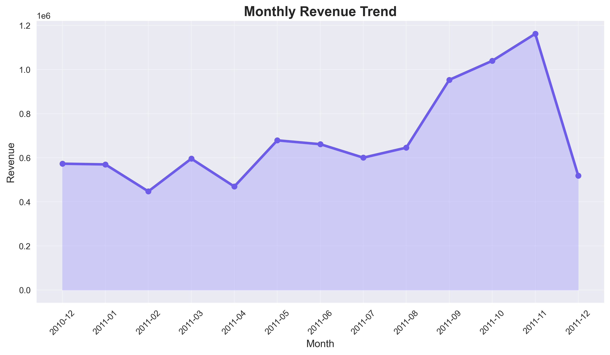
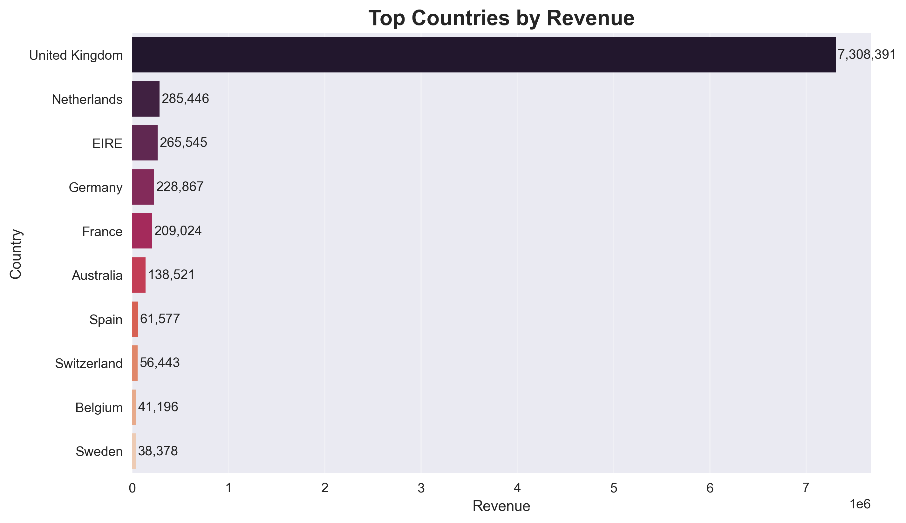
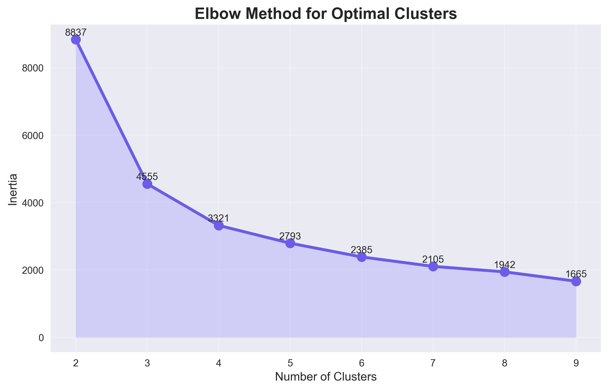
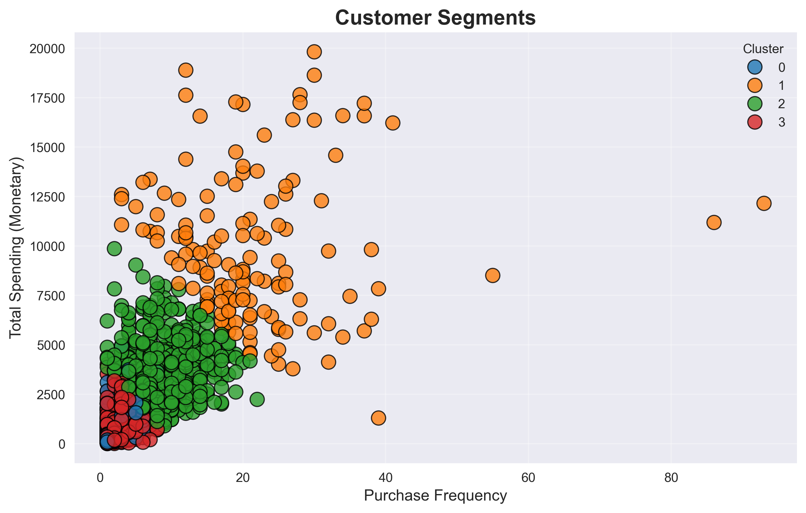
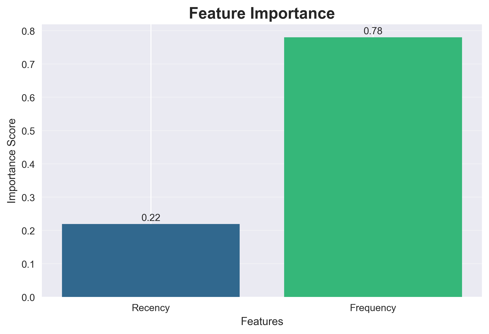

Portfolio Case Study · Retail Analytics
Customer Segmentation Customer Lifetime Value Prediction
End-to-end analytics
Business segmentation
GitHub Pages portfolio
I analyzed an online retail dataset using RFM analysis, K-Means clustering, and Random Forest modeling to identify high-value customer groups and explain spending behavior.
Live Project Snapshot
GitHub Pages
RFM + K-Means
Customer behavior converted into practical segments for targeting, retention, and spend analysis.
Project Overview
Built for decisions, not just charts.
The project segments customers based on recency, purchase frequency, and monetary value, then models current spending behavior. The result is a business-ready view of which customers are loyal, which are growing, and which may need re-engagement.
Retail customers have uneven purchase behavior, making broad marketing inefficient.
Build RFM features, cluster customer groups, and translate them into marketing actions.
Identified 4 customer segments and frequency as the strongest spend indicator.
Methodology
A clean analytics pipeline from transaction rows to customer groups.
Cleaned raw transactions
Removed missing customer IDs, canceled orders, negative quantities, and invalid prices.
Created RFM features
Calculated recency, unique-invoice frequency, and total monetary value for each customer.
Clustered customers
Standardized RFM metrics, handled top monetary outliers, and selected four interpretable groups.
Modeled spend behavior
Used Random Forest regression to estimate customer spend from recency and frequency.
Segmentation Results
Four customer groups with clear strategic actions.
Cluster 1
Highest-Value Loyal Customers
141 customers Avg frequency 21.45 · Avg spend 9,815.22Cluster 2
Strong Repeat Customers
714 customers Avg frequency 8.43 · Avg spend 3,330.25Cluster 3
Moderate Regular Customers
2,416 customers Avg frequency 2.50 · Avg spend 767.38Cluster 0
Inactive Low-Value Customers
1,023 customers Avg recency 251.96 days · Avg spend 434.13
Model Score
R² 0.4595
Random Forest model for current customer spend estimation.
Strongest Driver
Frequency
78.16% relative importance, making repeat purchase behavior the strongest signal.
Important framing:
This project is positioned as customer spend estimation and behavioral segmentation. It does not overclaim true long-term CLV forecasting without future-period labels.
Visual Story
Presentation-ready charts exported from the notebook.





Business Impact
How a business could use this work.
Reward VIP customers with loyalty campaigns and personalized offers.
Use win-back campaigns for inactive, low-frequency customers.
Prioritize high-frequency behavior as an indicator of spend potential.
Replace broad marketing with customer-value-based targeting.
Portfolio Ready